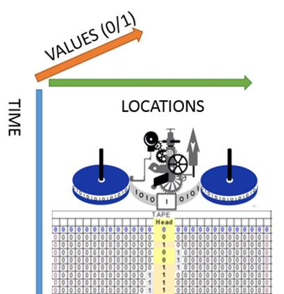
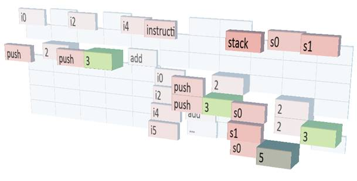

|
[THIS WORK IS IN PROGRESS AND NOT REVIEW READY]
This document details a lossless visualization standard for expressing
any recorded computation. For overviews of large systems or other lossy
visualizations standard geometric techniques (such as blurring or shrinking)
can be applied to the layout below. What the actual interface will look
like, and how it will operate, one may either conceive of on their own, or
follow my work in the gesture and productivity space at Microsoft.
Turing Fields
By Lewey Geselowitz, Senior Software Engineer
Contents: The Importance of Charting Any Computation , Turing Fields and Examples
The Importance of Charting Any Computation
By giving consistent shape to what computers do, we shed light on the transactions which hold together the Information Age, and allow for a transparent integration of communicated and computed information. From security to artistic recreation, it is only once the computers operation can be understood, that it can truly be trusted or utilized to its fullest potential.
For eight years I’ve utilized Turing Field techniques in software engineering, literally picturing the internal operations of computers while solving every day and highly complex problems. Simply, reliably, and accurately. The model reveals an accurate metaphor for what’s really going on within the software we use, without loss of integrity or information. It is a method which will someday allow instantly crafting personalized and smart information-interfaces, currently only possible through years of software development.
Turing Fields
Definition: Time-inclusive chart of a Universal Turing Machine
performing a recalled computation, using the axes of memory, time and stored
state.*
Purpose: To provide a simple, consistent and complete visual metaphor from which one easily infer the “flow of information” – i.e. the path across Turing Field space formed by related elements during a computation.
Definition: 1. Review of Universal Turing Machines a. In a Turing Machine, a tape of re-writable memory LOCATIONS is used to represent the state of each part of a computer at any particular TIME. b. On a Turing tape, each LOCATION contains a VALUE or STATE which is the stored information about that component. c. The Turing Model utilizes a ‘HEAD’ able to move along the tape and read and/or write the VALUE at each LOCATION which can comprehensively represent the actions of a computers CPU Central Processing Unit. (See UNIVERSAL TURING MACHINE). 2. Review of Modern Software and Chart Visualizations, as represented on a Turing Machine a. Each constituent instruction requires a unit of TIME and causes the HEAD to move left/right along the LOCATIONS tape or change the VALUE to go closer/further. b. The instructions are generally arranged in TIME order going down from FIRST TO LAST and spatially TOP TO BOTTOM; each line generally represents the LOCATIONS who’s VALUES are to be utilized in the calculation. c. In chart visualizations, an axis spatially represents the span of possible VALUES as a linear field, with opaque sections of that field denoting specifically charted occurrences. 3. Turing Field a. Defined as a volumetric chart with the perpendicular axes of: i. LOCATIONS stretching left/right ii. VALUES appearing nearer/further iii. TIME progressing down iv. Computations as shown as charted or opaque intersections of the above axes. b. Any recalled computation, represented as tuples of LOCATION + VALUE + TIME, can be completely expressed or charted as a Turing Field, allowing inspection and inference as to the exact operation of the recorded components.
Examples
*Images created using Excel and custom software. [TO BE IMPROVED]
Figure 1: Simple example of a ‘copy’ command which gets the ‘value’ in ‘from’ and duplicates it in ‘to’. This takes multiple time steps represented by the rows, and utilities five memory locations represented by the columns (three for the command, and two for the two locations), and refers to four values represented as both text and depth (the name of the command, the two memory locations, and the actual value being copied):
Figure 2: Turing-Field of a Processor Adding Two Numbers. A green highlight is drawn on 3 to show it appearing in the instructions, in the decoding of the instructions, and in stack memory, before being combined with 2 to create 5 (which was not mentioned in the instructions). On the left are the instructions to perform (push 2, push 3, add) stored starting at i0, i2 and i4. In the center are the “instruction” and “stack” columns which represent the processor states as the instruction were decoded. On the right are the two used stack registers s0 and s1. Each row represents a moment in time, first the value 2 is pushed onto the stack at s0, then 3 is pushed to s1, and then they are popped off the stack and added to get 5:

Figure 3: Turing-Field Visualization of a Fibonacci Sequence computation (a loop which, adds the two most recent numbers, starting with 0 and 1): Fibonacci(4) : = { Fib(1) = { 0, 1 }; Fib(2) = { 1, 1 }; Fib(3) = { 1, 2 }; Fib(4) = { 2, 3 } } = 3
static int fibn(int n){ fa: if (n < 2) return n; fb: int i=1, a=0, b=1; fc: while (i < n) { fd: int c = a + b; fe: a = b; ff: b = c; fg: i++; } fh: return b; }
Figure 4: Visualization of allocating memory, in this case a recursive Fibonacci Sequence computation: Fibonacci(4) = Fib(3) + Fib(2) = ( Fib(2) + Fib(1) ) + ( Fib(1) + Fib(0) ) = ( ( Fib(1) + 1 ) + ( 1 + 0 ) = ( ( 1 + 1 ) + ( 1 + 0 ) ) = 3
static int Fibonacci(int i) { fa: if (i < 2) return i; fb: int a = Fibonacci(i-1); fc: int b = Fibonacci(i-2); fd: return a + b; }
|
|